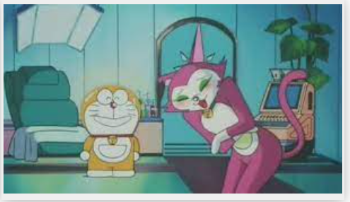
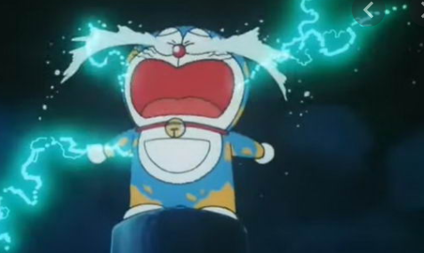

1 . ความหมายและที่มาของเรื่อง โดเรม่อน
โดเรม่อน เป็นการ์ตูนดังไปทั่วโลกแต่ น้อยคนมากที่จะรู้ว่า คำว่าโดเรม่อน หมายถึงอย่างไร และผู้จัดทำเนื้อเรื่องทำไมถึงให้ชื่อ โดเรม่อน สื่อฮ่องกงกล่าวถึงในรายงานว่า "โดราเอมอน" แปลว่า "ผู้พิทักษ์ซาลาเปาถั่วแดง" ในภาษาญี่ปุ่น นอกจากนี้ยังมีการพูดอีกว่า "dura" ไม่ได้มาจากโดรายากิ แต่น่าจะมาจากคำว่า "แมวป่า"
ซึ่งฟูจิโอะ (ผู้จัดทำเนื้อเรื่องโดเรม่อน) เคยพูดว่า ได้แรงบันดาลใจ จากแมวป่ามีกระดิ่ง ที่เรียกว่า "Eemon"
เป็นชื่อสามัญในญี่ปุ่นในสมัยเอโดะผลงานของ Fujiko · F Fujio หลายตัวใช้ตั้งชื่อตาม "Eemon" เช่น "21 Eemon" . กรณีหนึ่ง. มีคำพูดอีกอย่างหนึ่งในจีนแผ่นดินใหญ่ว่าชื่อโดราเอมอนประกอบด้วย 2 ส่วนคือดอร่าและอีม่อนดอร่าแปลว่าของขวัญจากพระเจ้าในขณะที่เอม่อนเป็นการออกเสียงของ "กูเอมอน" ในภาษาญี่ปุ่นและโดราเอมอนมีความหมายเทียบเท่ากับเทวดาผู้พิทักษ์

2 . ทำไม โดเรม่อนถึงชอบโดรายากิ
เหตุผลก็เพราะว่า "โดรายากิเป็นแหล่งพลังงานที่ดีที่สุดสำหรับโดราเอมอน" และเพราะในศตวรรษที่ 22 หุ่นยนต์แมวที่เสมือนเป็นคู่รักของโดเรม่อน ตอน วันเกิดโดราเอมอนในปี 2112 「2112เป็นหุ่นยนต์แมว ชื่อ "โนราเมียวโกะ" ได้ให้ขนมโดรายากิ เป็นของขวัญแก่
สาเหตุที่แท้จริงของโดราเอมอนที่ไปอยู่กับโนบิตะนั้น เป็นเหตุผลง่ายๆ เพราะตอนที่โดราเอมอนโดนหนูกินหูไปนั้น ถูกส่งไปโรงพยาบาลพวกหมอนั้นตัดหูทิ้งไป จนหัวกลมกับเกิดอาการกลัวหนูมากเกินเหตุถึงขนาดตัวซีดเป็นสีฟ้ามาถึงปัจจุบัน จากนั้นเสียใจมากจึงไปถามเซวาชิว่าทำไมไม่ซ่อมหูให้ในเมื่อครอบครัวเซวาชิเป็นเจ้าของต้องหาทางช่วยได้ แต่เซวาชิก็บอกว่าที่ฐานะครอบครัวทางบ้านยากจนมาก เพราะโนบิตะที่เป็นบรรพบุรุษของตนนั้นได้ก่อเรื่องสร้างหนี้สินสารพัดไว้มากมายมหาศาลจนปลดหนี้ใช้ยังไม่หมด จนลูกหลานตระกูลโนบิรุ่นหลังต้องมารับเคราะใช้หนี้กับลำบากมาก โดราเอมอนจึงคิดได้ว่าถ้าย้อนอดีตไปอยู่กับโนบิตะช่วงเด็กที่เป็นวัยหัวเลี้ยงหัวต่อกับแก้ไขเวลาในช่วงอดีต ก็จะสามารถช่วยให้ตระกูลโนบิรุ่นหลังมาจะไม่มีหนี้สินกับมีความเจริญมากขึ้น ทำให้ครอบครัวของเซวาชินั้นสามารถมีเงินมีฐานะปกติหรือรวยมากพอที่จะซ่อมหูให้ตนได้
เพราะถ้าโดราเอมอนไม่โดนหนูกัดหูจนขาด หรือตระกูลโนบิรุ่นเซวาชิไม่มีหนี้สิน โดราเอมอนก็ไม่มีเหตุผลที่ย้อนอดีตมาในยุคของโนบิตะตอนเป็นเด็กโดยเด็ดขาด
แต่พอเมื่อย้อนอดีตมานั้นโดราเอมอนได้เปลี่ยนแปลงเส้นเวลาของตัวเองกับเส้นเวลาที่โนบิตะอาศัยอยู่ทำให้เกิดเส้นเวลาใหม่ขึ้นมา คือ โนบิตะมีชีวิตเหมือนคนปกติไม่โชคร้ายเกินไปไม่เป็นหนี้แต่งงานกับชิซุกะสร้างครอบครัวกัน ทำให้เซวาชิที่เป็นสายเลือดของตระกูลโนบิกับโกดะไม่ได้เกิดขึ้นมาไม่มีตัวตนในเส้นเวลาใหม่ โดยตระกูลโนบิจะไม่เป็นเครือญาติกับตระกูลโกดะ
เมื่อเซวาชิไม่ได้เกิด โดราเอมอนก็จะไม่ถูกซื้อมาเป็นหุ่นยนต์พี่เลียงให้เซวาชิ ทำให้โดราเอมอนเป็นหุ่นพี่เลี้ยงที่ไม่มีใครอยากได้ เมื่อโดราเอมอนไม่ได้ถูกซื้อมาเป็นพี่เลี้ยง กับถูกกำจัดทิ้งเพราะเป็นของไร้ค่าในอนาคต ส่วนโดเรมีก็จะไม่ถูกสร้างขึ้นมา หรือก็คือโดราเอมอนคิดย้อนอดีตมาโดยสร้างเส้นเวลาใหม่นั้น เพราะความเห็นแก่ตัวของโดราเอมอนเองเพื่ออยากได้หูคืนกับให้ครอบครัวเจ้าของมีฐานะการเงินมากเพียงพอแค่นั้น โดยไม่คำนึงถึงอนาคตของตนกับเซวาชิและโดเรมี ทำให้เกิดเส้นเวลาที่ไม่มีโดราเอมอนกับเซวาชิและโดเรมีอยู่นั้นเกิดขึ้นมาได้ ทำให้เส้นเวลาของโดราเอมอนถูกลบหายไปจากประวัติศาสตร์ซึ่งช่วงเวลาที่ได้ใช้ชีวิตอยู่กับโนบิตะนั้นทำให้โดราเอมอนล้มเลิกเรื่องหูไปกับใช้ชีวิตในฐานะทานุกิสีฟ้าประหลาดพูดได้ในช่วงปัจจุบัน กับครอบครัวโนบิของโนบิตะตอนเด็กจนกว่าโนบิตะจะเรียนจบประถม แล้วตนค่อยกลับอนาคตของตนก็ตาม กับเน้นเป้าหมายคือให้โนบิตะโตเป็นู้ใหญ่ที่ดีเท่านั้นแม้ว่าในเส้นเวลาของตนจะหายไปตลอดกาลก็ตาม
โดราเอมอน และโดราเอมอนคิดว่า โดรายากิ = รสชาติของความรักครั้งแรก ตั้งแต่นั้นเป็นต้นมาโดราเอมอนจึงชอบโดรายากิมาก
3. โดเรม่อนทำไมถึงกลัวหนู
โดเรม่อนเดิมทีมีลักษณะคล้ายกับแมว (แต่มักถูกเข้าใจผิดว่าเป็นแมวชะมด) มันเป็นสีเหลืองทั้งหมดวันหนึ่งในศตวรรษที่ 22 เซซิว (หลานชายของ Daxiong) กำลังง่วง ได้ปั่นโดราเอมอนดินเหนียว กำลังจะมอบให้โดราเอมอนในวันเกิดของโดราเอมอน แต่หูดูไม่เหมือนหนูออกมาและขอให้ "หนู" ช่วยทำรูปดินเหนียว หูของเขา แต่ดูเหมือน "หนู" จะเข้าใจผิดและไปนอนบนโดราเอมอนและแทะหูของโดราเอมอนเหมือนตุ๊กตาดินเผาในเวลาพอโดราเอมอนตื่นขึ้นมาหลังจากเห็นหนูแทะหูเขาก็ ตกใจ ตะโกนเรียกหนูใส่เขาและวิ่งไปรอบ ๆ หลังจากนั้น Shixiu ก็พาโดราเอมอนนอนลงที่โรงพยาบาลและโรงพยาบาลก็ทำการผ่าตัดทันทีหลังจากนั้นโดราเอมอนก็มีศีรษะกลมโดราเอมอนเสียใจมาก ตั้งแต่นั้นโดเรม่อน จึงกลัวหนูมาก แม้แต่สัตว์ที่คล้ายๆ หนูก็ไม่กล้าเข้าใกล้

4 . ทำไมโดรม่อนถึงสีน้ำเงิน
แต่เดิมโดเรม่อนมีสีเหลืองทั้งตัว จากข้อ3
โดราเอม่อนเสียใจมากและโดราเอมอนร้องไห้อยู่สามวันสาม คืน ผลก็พบว่าสีร่างกายของโดเรม่อน(สีเหลือง) ถูกล้างให้สะอาดด้วยน้ำตาและเปลี่ยนเป็นสีน้ำเงิน ก็คือสีเดิมที่เป็นสีพื้นของโดเรม่อน คือสีน้ำเงินนั่นเอง
5. สาเหตุที่แท้จริงของโดราเอมอนที่ไปอยู่กับโนบิตะ
เพราะตอนที่โดราเอมอนโดนหนูกินหูไปนั้น ถูกส่งไปโรงพยาบาลหมอนั้นตัดหูทิ้งไป จากนั้นเสียใจมากจึงไปถามเซวาชิว่าทำไมไม่ซ่อมหูให้ในเมื่อครอบครัวเซวาชิเป็นเจ้าของต้องหาทางช่วยได้ แต่เซวาชิก็บอกว่าที่ฐานะครอบครัวทางบ้านยากจนมาก เพราะโนบิตะที่เป็นบรรพบุรุษของตนนั้นได้ก่อเรื่องสร้างหนี้สินสารพัดไว้มากมายมหาศาลจนปลดหนี้ใช้ยังไม่หมดโดราเอมอนจึงคิดได้ว่าถ้าย้อนอดีตไปอยู่กับโนบิตะช่วงเด็กที่เป็นวัยหัวเลี้ยงหัวต่อกับแก้ไขเวลาในช่วงอดีต ก็จะสามารถช่วยให้ตระกูลโนบิรุ่นหลังมาจะไม่มีหนี้สินกับมีความเจริญมากขึ้น พอที่จะซ่อมหูให้ตนได้ซึ่งช่วงเวลาที่ได้ใช้ชีวิตอยู่กับโนบิตะนั้นทำให้โดราเอมอนล้มเลิกเรื่องหูไปและใช้ชีวิต กับครอบครัวโนบิตะ เสมือนสมาชิกในครอบครัว และเน้นเป้าหมายคือให้โนบิตะโตเป็นู้ใหญ่ที่ดีเท่านั้นแม้ว่าในเส้นเวลาของตนจะหายไปตลอดกาลก็ตาม
ย้อนกลับ